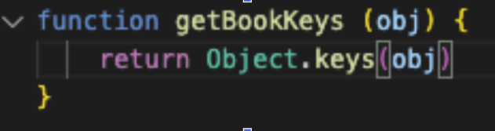

PROBLEM SOLVING
a time you were blocked on a simple problem
I was blocked and frustrated many times during the last sprint. It was super frustrating trying to make something work, like you know when you can imagine a really beautiful drawing in your head, and you can visualise it., but your hand can’t quite do it, you don’t have the dexterity. That’s what it feels like.
I had to research from other examples online watching other people write a function or built in method line by line for it to eventually sink in. I haven’t mastered a lot of these concepts but feel generally happy with the basics. I also learnt how to do some pretty cool things with methods, which are like little self contained machines that you give instructions, you can plug these into a lot of things, and in interesting combinations.
elegantly solving a problems
This week, I ran into this problem, and honestly it happened a few times, Trying to grab the keys from an object, and defaulting to the learned connection of “if something iterates it’s needs a for loop, for loops are good because they are custom and they help you to understand whats happening under the hood anyway…
....anyway after researching online at MDN documents, I went back and removed my old code and replaced the function, with the method (which is like a set of instructions) Object.keys(). .keys is crazy handy. Imagine you’ve got a bag full of overly priced groceries. Each of those groceries is a key. Object.keys lets us make a comprehensive shopping list of items in the bag as an array.
reflect on how confident
you feel
using
problem-solving
techniques/
processes:
Pseudo coding really works for me. You can write just the parameters for a method, before plugging it into something and have it in // so as to not disrupt the actual codebase.
I find deleting and editing your pseudo code as you go is really helpful, well at least while I'm the only person coding in it. I know that going forward I want my comments in the codebase to be readable and accessible for markers and collaborators. I feel somewhat confident in trying new approaches and the pseudo code was half explaining what I was planning for myself to do in plain english, and half adding small notes to remember something to come back to.
I know I have short term working memory, but through practice and refining the way we reflect and take notes, I think I can improve my problem solving skills through adaptation.
I was confused at first by the console log as we’ve only seen it using developer tools. Looking at the format for the already completed console logs in the other documents, I figured out the syntax to return my own functions in examples. You can insert lots of things into the console message, but great for logging out small pieces of code as well. I used prettier as well during this exercise to help with syntax/grammar.
I didn’t really reach out that much during this sprint which I wish I would’ve. I could’ve asked for help a few times when I was stuck, rather than forcing things to work, by trying different things over and over and jamming them together like two bits of illegal lego. Checking spelling, brackets, and flow is imperative. Slow down, take things one step at a time, start breaking the code into smaller portions, even if it’s just setting up an empty object.